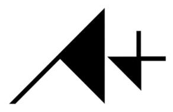

{{ p.name }}
{{ p.when }}{{ p.role }}
{{ p.blurb }}
- ·{{ d }}
General Engineering · Software Development
I'm a general engineering student at Texas A&M, headed for mechanical, originally from Cypress, Texas. Last summer I cut a live learning platform's load times by 97%. I've applied to Baja SAE for the Controls/DAQ or chassis subteam.

I'm building a course-registration app that ranks Texas A&M schedules by professor quality and by how you actually want your week to look.
{{ p.blurb }}
I came to engineering through code. What I want now is the part where data changes a decision: sensor traces, lap times, setup changes backed by numbers.
{{ h.body }}
I’m a member of the American Society of Mechanical Engineers student section. It keeps me around people building the physical side of engineering.
My application is in for the Controls/DAQ and chassis subteams. It’s the closest thing on campus to the work I want to be doing.
Off Hours
Editing is the hobby I've had the longest: clips cut to music I like. Games I work through as a list. Racing has its own page.
No brief and no audience, just clips I felt like putting together.
Watch on YouTube @joeysngnGames I'm working through. Click a card to move it along.
Racing
F1 got me into cars, but rally and GT3 are what I actually watch. Reading about setup changes is how I ended up interested in the data side of a car.
My favorite car on a grid right now.
GT3 is the class I'd point anyone at first. The cars are close enough in performance that races come down to traffic, tires, and strategy.
{{ g.body }}
Questions a broadcast feed can't answer, which I keep coming back to.
Notes
Whatever I'm figuring out at the time.
{{ para }}
Internships, research, or a team that needs someone on the data side of a car.